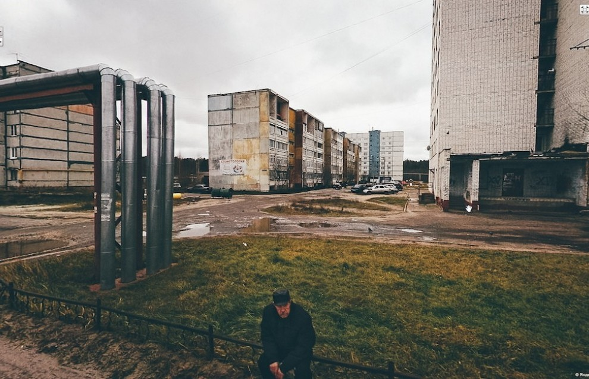

Animagraffs
Наглядная демонстрация того, как работает ДВС или реактивный двигатель, или пистолет. Клево!
Наглядная демонстрация того, как работает ДВС или реактивный двигатель, или пистолет. Клево!

Чувак выбрал кадры из видов на Яндекс.Панорамах. Офигенно.
Не знаю, что вы там слушаете, а я вот слушаю Наадю!
Водил тут ребенка на подготовительные курсы к школе. В школу.
Ощущения, что вернулся в 1987 год. Маразм и уебанство, увы, никуда не делись.
Интересное интервью Илона Маска:
Есть и по-русски.
Шикарно!
Давно так не ржал. Отличное кино.
Когда обойдешь мир, везде найдешь много зла, притеснений, неправды, а в России, может быть, более чем в других государствах. Не оттого, чтоб в России люди были хуже, чем в Западной Европе; напротив я думаю, что русский человек лучше, добрее, шире душой, чем западный; но на Западе против зла есть лекарства: публичность, общественное мнение, наконец свобода, облагораживающая и возвышающая всякого человека. — Михаил Бакунин
Сумашедший сериал.